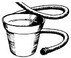

Moose on the Loose
The once-endangered moose has begun to repopulate much of its former range. Moose are showing up in areas where they haven't been seen since the 1700s. New Hampshire now has an estimated 2,000 moose, and Vermont, 600. Even New York and Massachusetts report frequent sightings. Maine, whose moose population is conservatively estimated at 20,000, seems to be the seedbed of the comeback.
But the folks in Michigan aren't going to wait for the moose to emigrate from Maine. The Wolverine state has some prime habitat that hasn't seen a moose since the loggers arrived in the 1880s. So Michigan traded grouse to Missouri for wild turkeys, adding them to a cache of Michigan gobblers, which, in turn, was traded to Ontario for 15 moose, with an option for 15 more. Wildlife biologists hope the moose will thrive in Michigan's forests.
Here are figures that speak for themselves: In 1984, 40% of U.S. households had a vegetable garden. Those households spent, on the average, $32 for gardening materials, worked one to four hours a week tending their gardens, and harvested produce worth $356. The total yields of household gardens in the U.S. came to 13.5 billion pounds, with a retail value of $12 billion. It's interesting to note that the wealthiest households-those with incomes over $40,000-were the most likely to have gardens, while households bringing in less than $7,000 were the least likely. Lack of space and too little time were the most common reasons given for not planting.
A few extra glasses of skim milk daily may be better than calcium supplements for postmenopausal women, who are often prone to osteoporosis. Scientists stumbled onto this while trying to determine if milk could be as effective as calcium carbonate supplements. Not only was the extra milk just as effective at retarding bone loss, but it did not suppress bone renewal, as the supplements tended to do. By the way, a glass of warm milk before bed might be good for something more than just a good night's sleep: The body has to draw on the bones' calcium reserves at night, a critical loss for people prone to osteoporosis. Some scientists believe that an extra calcium boost before bed would forestall this loss.
Other studies suggest that calcium could play a vital role in fortifying the body against heart disease and cancer. Researchers report that men whose diets were low in vitamin D and calcium had a colorectal cancer rate better than twice that of men who had a relatively high intake of these nutrients. And the February Journal of Nutrition cites a study indicating that calcium might discourage the formation of plaque in blood vessels. Just don't take too much vitamin D with your calcium: The same study warns that excessive levels of vitamin D might promote calcification, the deposition of calcium in the form of plaque.
The proliferation of greenhouses in recent years has been made possible by the development of new plastics that have reduced the expense and trouble of building and maintaining the structures. However, too much of certain kinds of plastics used within the greenhouse can actually harm plants growing there, claims a British magazine, Garden Answers. The article in question implicates fumes from dibutyl phthalate, a softening agent added to PVC and found in garden hose, irrigation tubes, flowerpots, and seed trays made of PVC. Since closed areas promote the buildup of fumes and even dilute concentrations can be harmful to crops, greenhouse owners should be particularly wary of overuse of this material.
Whatever happened to the: African "killer" bees that es gaped in Brazil, invaded the, Movie industry, and at last report were headed for the U.S.? Well, after colonizing most of South and Central America, the Africanized bees are preparing for an assault on Mexico's southern border, which means the U.S. is still on their itinerary for 1988. And, unfortunately, the journey north has done nothing to sweeten their disposition. Actually, the sting of the Africanized bee is no worse than that of the European bee now responsible for honey production in the U.S. It is true that the Africanized bees are more, aggressive more sensitive to distubance and more prone to swarm and sting. But the Hollywood scenario in which swarms of bees bees take to the air in search of their next nubile victim, is greatly exaggerated, and obscures the real victims-the apiarists. The killer bees monopolize nectar sources, reproduce more quickly, and even mate more successfully with the European queens, with the result that it becomes impossible to maintain African-free European hives. In most countries settled by the bees, honey production has plummeted, partly as a result of greater difficulty to situating and handling the bees, but also because the temperamental bees actually produce less surplus honey and frequently abandon their hives.
More optimistic forecasts predict that the bees will settle only the area south of the 32nd parallel, which runs from El Paso through Desoto, Mississippi, to Savannah. However, many entomologists expect the bees to colonize an ate that extends from Washington, D.C., to northern California and is charized by 240 or more frost-free days a year. Some believe
bees could overwinter even as far north as New York City... In any case, all of the U.S. would be affected, since the South and Southwest produce the packaged bees that are sent to restock hives in the colder parts of the country each spring.
|
|
 |
|